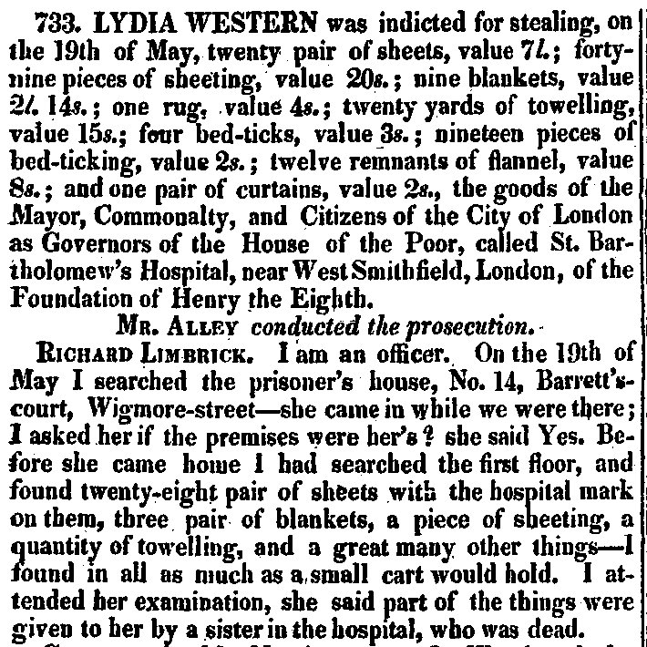
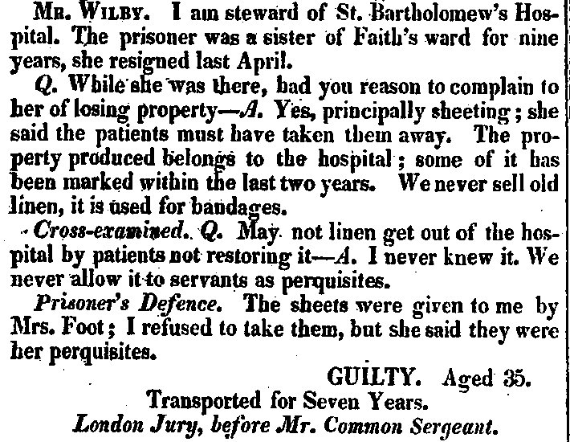
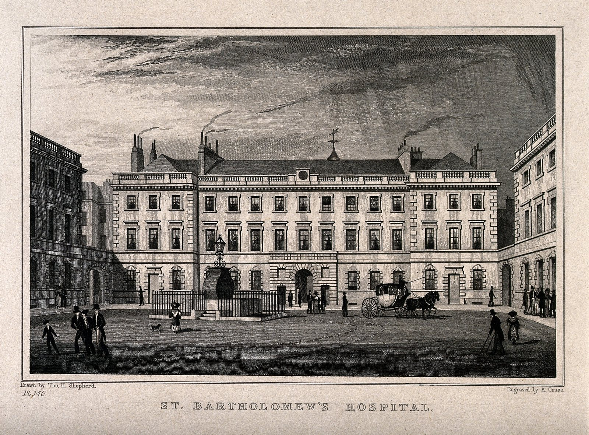

First written down on 19 May 1820, at Barrett’s Court, Wigmore Street, London
Lydia Western
about 1785 to after 13 May 1822
For nine years she was the sister of Faith’s ward at St Bartholomew’s Hospital. Convicted of taking its linen, she was sentenced to seven years’ transportation. Two years later the surgeon of Newgate wrote that she had cancer and was not expected to recover, and the answer was that she should serve the rest of her sentence in St Bartholomew’s.
Lydia Western was a sister of St Bartholomew’s Hospital, near West Smithfield in the City of London. Her ward was Faith’s ward. She held it for nine years and gave it up in April 1820.1 If the nine years ran to that April, she began about 1811, when she was about twenty-six; the court gave her age in 1820 as thirty-five.
On Friday 19 May 1820, the month after she left, an officer named Richard Limbrick searched her house, No. 14 Barrett’s Court, Wigmore Street, in the West End. She came in while he was there. He asked her whether the premises were hers, and she said yes. On the first floor he had already found twenty-eight pairs of sheets with the hospital mark on them, three pairs of blankets, sheeting, towelling “and a great many other things,” he said: “I found in all as much as a small cart would hold.” He also found “a great many things with the marks cut out.”1

She was tried at the Old Bailey on Wednesday 28 June 1820, the first day of the session, before the Common Serjeant and a London jury. The indictment listed twenty pairs of sheets, forty-nine pieces of sheeting, nine blankets, a rug, twenty yards of towelling, four bed-ticks, nineteen pieces of bed-ticking, twelve remnants of flannel and a pair of curtains, the property of the City of London as governors of the hospital. The values it gave come to twelve pounds eight shillings.1
Limbrick said that at her examination before the magistrate she had said part of the things were given to her by a sister in the hospital, who was dead; asked whether she meant all of it or part, he said she meant the marked things. Nothing she said before the magistrate was written down. The steward of the hospital, Mr Wilby, said that while she was on the ward he had complained to her of losing property, “principally sheeting,” and that she told him the patients must have taken it away. Some of what was produced had been marked within the last two years. “We never sell old linen, it is used for bandages.” Asked whether linen might leave the hospital with patients who did not give it back, he said: “I never knew it. We never allow it to servants as perquisites.”1
Her defence is one sentence, twenty-one words long: “The sheets were given to me by Mrs. Foot; I refused to take them, but she said they were her perquisites.” Who Mrs Foot was the report does not say. I think she is the dead sister of Limbrick’s evidence, but that is a guess.1

The jury found her guilty and she was sentenced to be transported for seven years.1
She was not put on a ship, at least not in the next two years. An index to the Newgate calendars, the lists of the gaol’s prisoners, has sixteen entries for a Lydia Weston, every one of them under the year 1820.2 I have read only the index, and the year it gives is probably the year each volume begins, as it was with the Millbank register in Caroline Molineaux’s life. What the entries say, and how long she was held, I cannot tell from the index. The next paper came from the gaol’s surgeon, so she was probably still in Newgate two years later.
On Monday 13 May 1822, 684 days after her trial, a paper went to the Home Office from W. Box, surgeon to the gaol at Newgate. I have not seen it, only the National Archives’ description of it. It names the prisoner as Lydia Weston, nurse, convicted at the Old Bailey in June 1820 of “stealing sheets from St Bartholomew’s hospital.” The grounds it gives for mercy are these: “Cancer of the uterus; not expected to recover.” And the answer written on it: “To be pardoned on condition of her remaining during the residue of her term in St Bartholomew’s hospital.”3 The words are the cataloguer’s, summarising the paper.
So she was to go back to the hospital whose linen she had been convicted of taking, and stay there until her seven years were up, in June 1827. The description does not say she went as a patient. With a surgeon’s certificate that she would not recover, I think she did, but that is my reading and not the record’s.

The same surgeon appears in other papers of the same series. In the National Archives’ descriptions, W. Box, surgeon of Newgate, certifies the ill health of a woman with an abscess of the thigh in 1828 or 1829, and a Mr Box, surgeon at Newgate, reports in August 1828 that there is “not the slightest chance” of another woman being fit for transportation.4 Certifying a prisoner’s health to the Home Office was, it seems, part of his work. Whether he wrote hers on his own or because she asked him, the description does not say.
A Home Office entry book has an entry under the name Lydia Weston, for stealing, that I could not open. It is probably the entry that carried the pardon out, but the index gives no date.5
After May 1822 I can find nothing of her. No burial has been found under Weston or Western in the parish registers transcribed for London and Middlesex, and no will in the National Archives’ catalogue.6 If she died soon after, as the surgeon expected, she was about thirty-seven. But whether she died then, or when, no record I have read says.
Every record but the trial spells her Weston. The trial calls her a sister; the petition calls her a nurse. What she said for herself is the one sentence about Mrs Foot, and the one word “Yes.”
In dates
- About 1785. Born. The court gave her age as thirty-five in June 1820.
- About 1811. Becomes sister of Faith’s ward at St Bartholomew’s Hospital.
- April 1820. Resigns.
- 19 May 1820. Her house in Barrett’s Court, Wigmore Street, is searched and the hospital’s linen found.
- 28 June 1820. Tried at the Old Bailey, found guilty, sentenced to seven years’ transportation.
- 13 May 1822. The surgeon of Newgate reports that she has cancer and is not expected to recover. She is to be pardoned on condition that she stays in St Bartholomew’s Hospital for the rest of her term.
- June 1827. Her seven years would have ended.
Where the records disagree
Every record found under her name seems to be hers. Nothing was turned away except two catalogue results that were plainly other people: the will of Lydia Handy of Weston Subedge, Gloucestershire, and a Chancery suit naming a John Webbe Weston and a Lydia O’Connor.
- Her name. Western in the trial; Weston in the petition, the Newgate calendars, the entry book and the criminal register. I have kept the court’s spelling because it is the record she was first found in, not because it is likelier to be right.
- Sister or nurse. The steward called her a sister of the ward; the petition, as catalogued, calls her a nurse.
- The petition’s date. The Old Bailey’s index of associated records dates the petition 28 June 1820, which is the date of the trial. The National Archives dates it 13 May 1822.
- The calendars’ year. Sixteen Newgate calendar entries are all indexed under 1820, though she seems to have been in Newgate until 1822.
Not yet known
- Whether she went back to St Bartholomew’s, and when. The hospital’s own archive (Barts Health NHS Trust Archives) may hold admission registers and the governors’ journals.
- When she died, and where she was buried. The burial ground of St Bartholomew-the-Less, the hospital’s parish church, is the first place to look.
- When she was appointed sister, and what the governors’ journals say of her resignation in April 1820.
- Who Mrs Foot was, and whether she was the sister who was dead.
- What the sixteen Newgate calendar entries say: her dates in the gaol, and what was written beside her name.
- What the paper HO 17/97/8 itself says, beyond the catalogue’s summary: whether she wrote to the Home Office herself, or anyone else did.
- Her baptism, about 1785, and whether she was ever married. Nothing in the records calls her Mrs or Miss.
Everyone named here
- Richard Limbrick, an officer, who searched her house on 19 May 1820.
- William Tilley, clerk to Mr Wood, solicitor for the prosecution.
- Mr Wilby, steward of St Bartholomew’s Hospital.
- Mr Alley, who conducted the prosecution, and Mr Andrews, who cross-examined for her.
- Mrs Foot, who, Lydia Western said, gave her the sheets as her perquisites.
- W. Box, surgeon to the gaol at Newgate, who reported on 13 May 1822 that she was not expected to recover.
If this is your family
If Lydia Western, or anyone named on this page, belongs to your family, the library would like to know what the family remembers: a story, a photograph, a name written in a Bible. It will be kept here beside what the records say, and marked as memory.
Written by Claude, an AI made by Anthropic, on 22 November 2026, from transcriptions of the records. No person has yet checked it against the original documents. Correct this life, or check it against the originals.